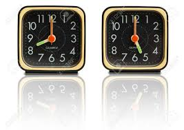

CIRCLE GOES 8-5 AND THE EMPLOYEES ARE LOVING IT!

From its genesis, Circle Infotech Pvt. Ltd. has earned a reputation for its exemplary work ethics and policies. The organization is well-known to have implemented the best practices to keep up a work-life balance; and one of the laudable efforts is the introduction of flexibility and early working hours.
Flexible working hours were not unknown to the Circlians, but the concept of early shift timings has definitely been considered as a quantum leap to garner larger benefits. Determined to create an engaging workplace, the company adopted a new shift timing from 8 AM to 5 PM, effective from 2017. So, Why did we introduce this? And how does it impact you?
- Beginning of an Early Shift
When it comes to workplace culture, Circle boasts of its high organizational values. As a growing organization, Circle appreciates and maintains diversity. Here one can find the talented young interns and the highly experienced professionals working alongside each other. With a majority of female employees which accounts for more than 50% of the total strength and a large number of freshers and interns, the authority clearly felt the need to reform its existing dictum that is suitable for all.
Due to lack of free time, several people had to trade their passion for employment. Unlike many other organizations, Circle governing body understands that individual preferences must be nurtured and by no means our employees should be estranged from their hobbies, passion and amateur interests.
Taking a stance for this noble cause, the senior-most employees proposed that the working hours should be structured in a way which would bring harmony in the professional and personal lives. In order to keep up with the everlasting spirit to mutually grow, the administration has officially enforced 8 AM to 5 PM shift.
- Why Did We Introduce Early Shift Timings?
A significant decision such as fixing shift timing did not take place all of a sudden. The administration has adjudicated the new shift timing depending on several factors. While considering the major setbacks of the 10-7 shift, the management found the female employees some of whom are married and/or with children, have experienced issues to cope with work-life balance.
Firoja Parveen, the CEO, strongly recommends early shift timings. She says that it not only benefits the company but also improves the employer-employee relationship. When asked why she took such a strong decision which eventually turned out highly efficient, she said:
“When I was working in the 10-7 shift I found it difficult to fulfill my personal obligations. Then I started coming early and it gradually improved the condition. Astonished by the huge impact of early office hours I thought, why not let all our employees enjoy the benefits of early office timings?”
Other employees at Circle also shared their thoughts on this issue.
“We at Promact, encourage our employees to maintain a balance between professional and personal lives as it enhances productivity, creates a healthy working environment and because we care”,
opines the HR & Admin Manager, Adwitiya Das
Before it came into effect, all the employees participated in a small survey. The survey received an overwhelming response from the participants. Initially, the new timings (8 to 5) was introduced as an experiment for 1 month, with around 98% of employees agreeing to take part in it. After 1 month, again a survey was conducted for feedback. While more than 90% of the employees were able to follow the new timing, all did agree to the continuation of the new timings.
- Benefits of Coming Early
Advantages of an early shift timing are mainly twofold where both the employer and employee remain at the receiving ends. Employees who work at their peak hours of productivity, experience increased morale, motivation, lowered stress and burnout. They are able to dedicate time and energy to learning or socializing and to maintain work-life balance. On the other hand, the organization reaps the benefits with its enhanced ability to attract and retain talent.
When interviewed some employees, especially the working mothers, we received the following responses –
“I always used to think of going to work early, so that I could spend more time with my family; but I never tried that out. When Promact introduced early working hours, I am glad that I have started coming early. This has immensely helped me to balance my work and family life.”
- Increase in productivity: All successful people who achieved the top-most positions often emphasize on early-morning engagement. Scientific research shows the human brain is more active and relaxed in the morning than the later part of the day. Coming early helps you increase your productivity so you can climb the ladder of success.
- Reduced tardiness: Tardiness has many negative repercussions in the workplace. Late coming jeopardizes business, moreover, it takes a toll on personal lives. Commuters who travel from Nadiad, Bharuch and other neighboring cities to Vadodara were initially discomforted by the delay in public transport. Shortly after the new shift timing resumed, the organization noted a drastic drop in late arrivals.
- Healthy lifestyle: Getting up early has hundreds of positive effects on health and the body’s internal clock. It promotes brain health, eliminates stress, boosts energy, increases metabolism and keeps you healthy. On the other hand, late shift timings are associated with poor health conditions, gastrointestinal disorders, and anxiety.
- Getting more time in a day: Whether it comes to helping your children with their homework or spending quality time with the family, we all look forward to accomplishing our personal responsibilities. Taking a pragmatic approach by choosing to come early, one may contribute more time to pursue creative productivity or passion and be able to fulfill personal commitments after work.
Dipa Majumdar

A bon vivant who heralds from someplace else. Fanatic about the joys of life, curious about the mystical nature and hidden treasures, passionate about cultural differences, a bibliophile and totally obsessed with writing.


Recent Comments